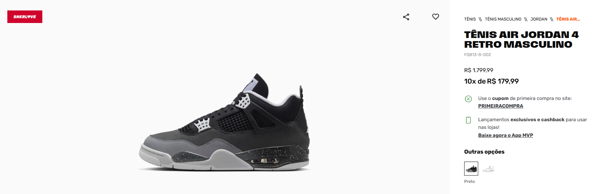
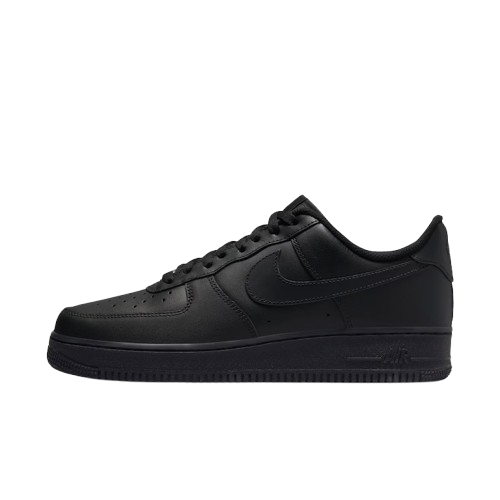
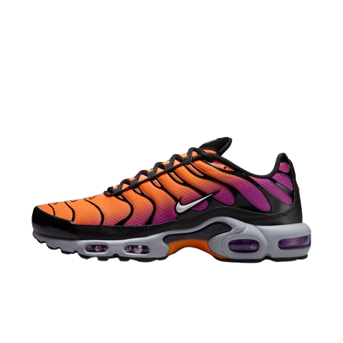
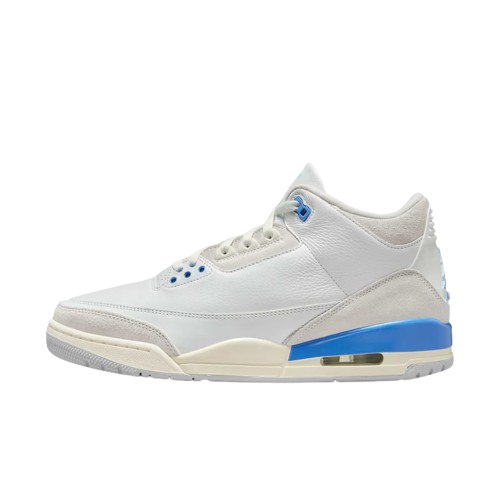

Encontre as melhores ofertas em tênis das principais marcas! Nosso site reúne promoções exclusivas,
cupons de desconto e liquidações das maiores lojas online, para você economizar sem abrir mão do estilo
e conforto.
Promoção do Dia

Produtos
Air Max 95 OG (GS)
Bright Mandarin
R$ 1.099,99
Inspirado no corpo humano, o Nike Air Max 95 combina conforto inacreditável com estilo de virar a
cabeça. Os painéis laterais icônicos apresentam cores retrô, enquanto o Nike Air visível no calcanhar e
antepé amortece cada passo.
SKU: HF/7054-006
Máximo de 3 unidades por CPF

Nike Air Force 1 '07'
Preto
R$ 759,99
O brilho perdura no Nike Air Force 1 ’07, o tênis original do basquete que dá um toque de inovação
naquilo que você conhece bem: sobreposições costuradas e duráveis, acabamentos simples e a quantidade
perfeita de brilho para fazer você se destacar.
SKU: CW2288-001
Máximo de 3 unidades por CPF

Nike Air Max Plus
Preto-Degrade/Roxo e Laranja
R$ 987,99
Leve sua atitude ao extremo com a estrutura em formato de chama que adiciona calor às ruas, enquanto a
tela arejada mantém o frescor. O Nike Air Max Plus proporciona uma experiência Nike Air ajustada que
oferece estabilidade premium e amortecimento inacreditável.
SKU: DM0032-014
Máximo de 3 unidades por CPF

Air Jordan 3 Retro
Branco/Azul
R$ 1.099,99
A lenda dos calções da sorte do MJ persiste neste AJ3. O couro de qualidade superior em branco Summit
combina-se com as sobreposições de camurça em Photon Dust e os detalhes em Legend e azul Hydrogen para
homenagear os calções por baixo dos calções. Sempre pensamos que o seu segredo estava no tênis, mas
talvez tenha estado nos calções.
.png)